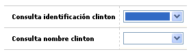

Parámetros solicitudes por producto
Localización: Este formulario de dos campos permite ingresar los parámetros de derogatorio de solicitudes. Adicionalmente, cuenta con un botón en la parte superior para volver al formulario principal.
Estos campos permiten determinar si el sistema muestra un mensaje de advertencia al tratar de grabar una solicitud de un cliente en derogatorio, o si definitivamente el sistema debe mostrar error y no permitir grabar nada de la nueva solicitud.

Consulta Identificación Clinton |
Si se selecciona este campo (hace referencia a la identificación del cliente en la lista de derogatorio de cedulas), el aplicativo presentará un mensaje en la opción de Ingreso de solicitudes que indica que el documento esta en derogatorio de cedulas y por lo tanto no desplegará la opción de ingreso de solicitudes. Esta verificación la realiza independientemente que se haya marcado el parámetro o no. En otras solicitudes donde la validación no se hace desde el ingreso de solicitudes el aplicativo desplegará un mensaje de error si se ha marcado error en el parámetro, el cual no permite guardar la solicitud o por el contrario si se selecciona un mensaje de advertencia el aplicativo informará que el documento del cliente se encuentra en derogatorio de cédulas pero permitirá seguir llenando la solicitud. Nota: El aplicativo realizará la validación primero por el Número de identificación y luego por el Nombre. Adicionalmente se debe tener en cuenta que si no se ha marcado ningun parámetro el aplicativo no realiza las validaciones. |
Consulta Nombre Clinton |
Si se selecciona este campo (hace referencia al nombre del cliente que se encuentra en la lista de derogatorio de cedulas), el aplicativo realizará la validación al momento de ingresar al momento de ingresar información en la solicitud (después de haber realizado la validación por numero de documento de identificación). Si se selecciona Error, el aplicativo desplegará un mensaje de error el cual no permite guardar la solicitud o por el contrario si se selecciona un mensaje de advertencia el aplicativo informará que el cliente se encuentra en derogatorio de cedulas pero permitirá seguir llenando la solicitud. |
Etapas | Cupos extendidos | Relaciones laborales | Cupos mín y máx por rango |Copiar parámetros